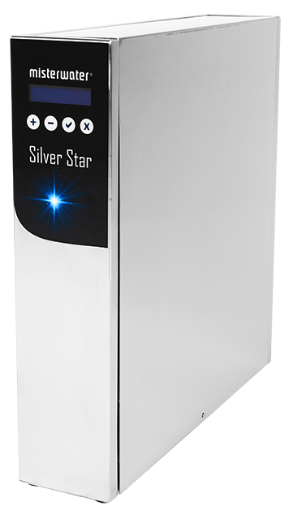

Reverse Osmosis
misterwater® Wasserfilteranlagen (Puria / Arctica / Silver Star / Futura)
Die Herstellerseite führt keine einzelne Anlage namens „Premium RO System“, sondern vier Umkehrosmose-Modelle für unterschiedliche Einbausituationen.
Preis auf Anfrage
Technische Daten
| Hinweis | Die Quelle führt vier Modelle, kein offizielles Modell „Premium RO System“ |
| Modelle | Puria, Arctica, Silver Star und Futura |
| Puria | Auftisch; 8 Stufen; ca. 0,7 L/min; 25,3 × 36,4 × 40,4 cm; 7,5 kg |
| Arctica | Untertisch Direct Flow; 7 Stufen; ca. 1,5 L/min; 10,5 × 38,5 × 50 cm; 11,8 kg |
| Silver Star | Untertisch Direct Flow; 8 Stufen; ca. 2,0 L/min; 10,5 × 45 × 50 cm; 13,5 kg |
| Futura | Untertisch mit Tank; 7 Stufen; ca. 1,0 L/min; 35 × 40 × 12 cm; 3,4 kg |
| Reinwasser/Abwasser Puria | ca. 2,33:1 |
| Reinwasser/Abwasser Arctica/Silver Star | ca. 1:1,2 |
| Reinwasser/Abwasser Futura | ca. 1:1,3 |
| Technologie | Umkehrosmose |
| Zielregion | Für Wasserbedingungen in Deutschland, Österreich und der Schweiz entwickelt |
Datenhinweis
Die Angaben stammen aus öffentlich zugänglichen Hersteller- und Produktunterlagen. Nicht veröffentlichte Werte wurden nicht geschätzt. Änderungen und Modellvarianten sind möglich.